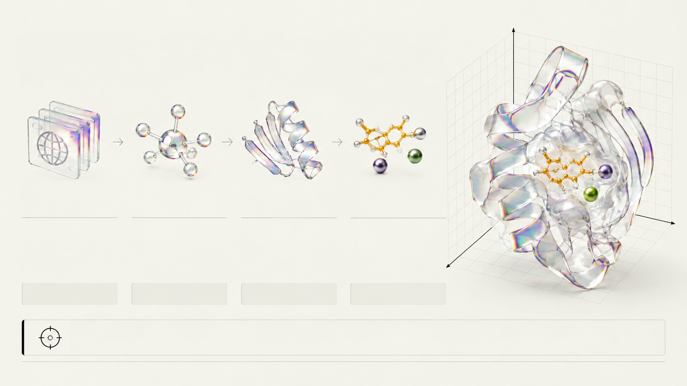

국제 질병 표준 분류
MONDO 온톨로지
병원과 연구소마다 다른 질병 명칭을 국제 표준 분류 코드로 통일하여 알츠하이머병이나 비소세포폐암 같은 대상 질환을 명확히 정의합니다.
MONDO_0004975 등

CRISTA · STEP 01 · TARGET DISCOVERY
표준 질병 온톨로지와 연관성 근거 점수로 표적을 고르고 실측 3D 구조를 불러옵니다.
MONDO 온톨로지
병원과 연구소마다 다른 질병 명칭을 국제 표준 분류 코드로 통일하여 알츠하이머병이나 비소세포폐암 같은 대상 질환을 명확히 정의합니다.
MONDO_0004975 등
Open Targets v4
EMBL-EBI와 제약사 컨소시엄 데이터로 유전학(GWAS), 학술 문헌, 기존 약물, 조직 발현의 4대 근거를 0~1점 점수로 제시합니다.
4대 근거 · 0~1점
PDB (Protein Data Bank)
X선 회절이나 극저온전자현미경(Cryo-EM) 실험으로 측정한 원자별 3차원(x, y, z) 좌표를 옹스트롬 단위로 기록한 구조 지도입니다.
1 Å = 10⁻¹⁰ m
PDB 3D 구조 12종 (§6.1.1)
ACHE(4EY7), EGFR(1M17), MAOB(2V5Z) 등 12종 표적에 활성에 필수적인 보조인자(FAD)와 금속 이온까지 보존했습니다.
FAD · Zn²⁺ · Mg²⁺
MONDO는 질병 분류 표준이고 연관성 점수는 단독 원인 확정이 아니며, PDB는 X선 회절·Cryo-EM 등 실험 구조를 포함합니다.
xyz